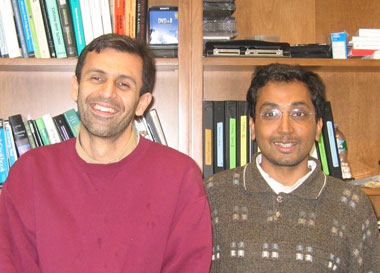

News Archives : 2009 : Evolution and Specificity of MAP Kinases
by Areez Mody and Sharad Ramanathan
March 23, 2009
|  (L to R) Areez Mody and Sharad Ramanathan |
During evolution certain gene families have increased in number following gene duplication by repeatedly finding novel functions even though random mutations tend to destroy the majority of such duplicates into non-coding DNA. What molecular properties have allowed the proteins in these families to be so flexible?
Our comparative study of one such family revealed that these proteins had been pivotal in allowing the networks containing them to rewire during evolution and create new decision-making circuits in the cell. Studying the protein sequences of this family in 22 eukaryotic species we identified patches of surface residues that allowed these proteins to tune their specificities. To confirm this experimentally we focused on two proteins of this family, which in the yeast Saccharomyces cerevisiae, are responsible for initiating the cells' response to a signal of pheromones (small peptides secreted by yeast cells of the opposite mating type), and for initiating a recovery from high osmolar shock (such as when becoming dehydrated by drinking salty sea water). By combinatorially swapping the surface patches that we had identified, we constructed a large number of proteins belonging to this family, which in vivo rewired the decision networks of the yeast cell. Some proteins “cross-wired” the networks causing it to initiate an osmolar recovery in response to pheromone and vice versa. Other proteins caused the cell to begin its mating program in response to either pheromone or osmolar shock.
Our collection of proteins show that the region in protein space between two extant proteins of this family is connected at a coarse level by functional proteins. These could be the intermediates through which a duplicated member of this family might evolve en route to its new function analogous to changing one word into another using meaningful intermediates only: “WORD --> WORE --> GORE --> GONE --> GENE”. The rich variety function of the surrounding space might be the reason why this family has successfully radiated through evolution.
Read more in nature cell biology